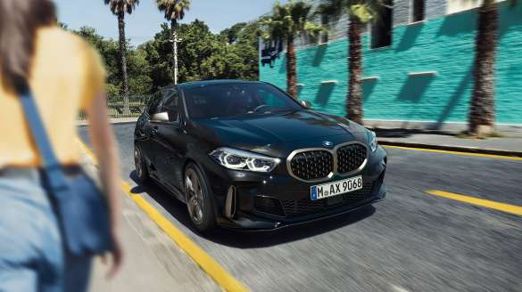
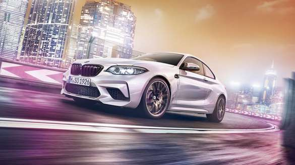
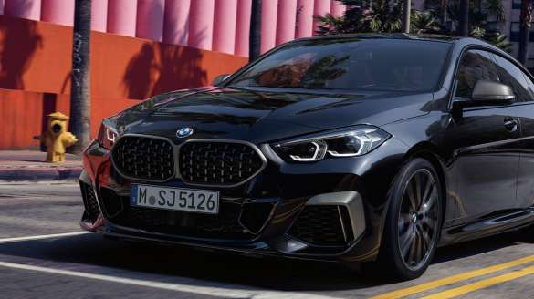

BMW M135i xDrive
Dérivée de la Série 1, la BMW M135i xDrive délivre davantage de performances, de style et de plaisir de conduire. Son puissant moteur de 306 ch associé au différentiel autobloquant de série, à la transmission intégrale intelligente xDrive, à la boîte automatique à 8 rapports et à la direction DirectDrive promettent une dynamique de conduite incomparable.

BMW M2 Competition
Dotée d’un design résolument athlétique et d’un moteur 6-cylindres en ligne BMW M développant 410 ch lui permettant d’abattre le 0 à 100 km/h en 4,2 sec, la BMW M2 Competition repousse les limites du plaisir de conduire sportif. Elle reçoit également un différentiel M Actif qui optimise la motricité et la tenue de route, ainsi qu’une barre anti-rapprochement en PRFC.

BMW M235i xDrive Gran Coupé
Avec sa silhouette expressive qui adopte un design résolument sportif et élégant, la BMW M235i xDrive Gran Coupé attire tous les regards. Dotée d’un moteur de 306 ch, de la technologie à quatre roues motrices BMW xDrive, d’un différentiel à glissement limité et de freins M Sport, votre plaisir de conduire est optimal.